To stand out in the competitive software industry, as well as to engage potential contributors, a complete GitHub repository is an effective tool. In this lab we will introduce you to an overview of GitHub, how it works, and show you some examples of strong repositories. Finally, we will discuss using GitHub as a design and coding portfolio, which you can use to showcase your work and attract prospective employers. As a running assignment in this lab, you will add to your GitHub portfolio, which will be assessed in a live interview in the final lab of the semester.
Version Control
Git is version control software responsible for backing up different version of your source code over time, and letting you restore or jump between different versions. Git aids in backup, branching, and collaboration. A Git Repository (repo) is the name for the database in which source files are stored. GitHub is a cloud service, owned by Microsoft, which can host our repositories remotely. VS Code is an open-source text editor which can easily synchronize local files to GitHub repositories.
Our Setup
What we’re going to be setting up:
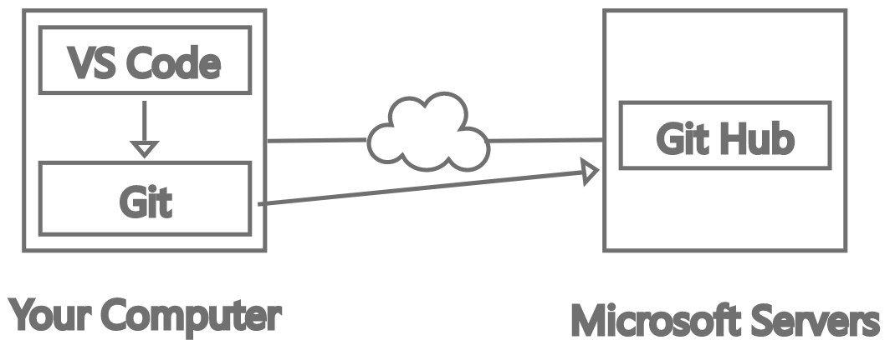
Install VS Code…
Download and install VS Code. The default settings are typically fine.
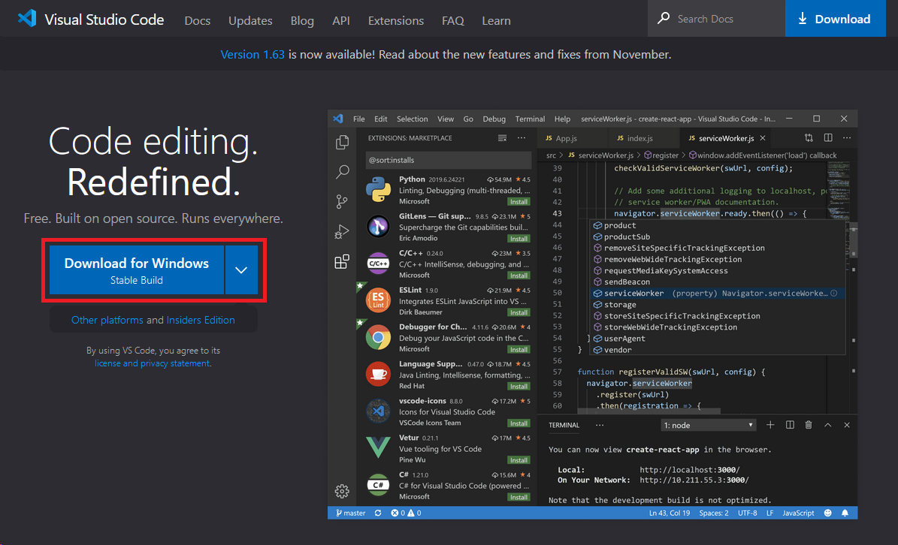
Overview

- Left panel - explorer, search, extensions, git
- This area changes depending on what is selected in (1).
- Tabbed interface lets you have multiple files open at once.
- Centre stage is where you will edit your code
- The minimap is a zoomed out view of your code, and helps you navigate quickly.
- Terminal, debugging and output appear down here. Sometimes this area is hidden.
- See which modes the editor is in, like language, line endings, tab size, etc.
Install Git
Download and run the installer for your system. (e.g. 64-bit windows setup).
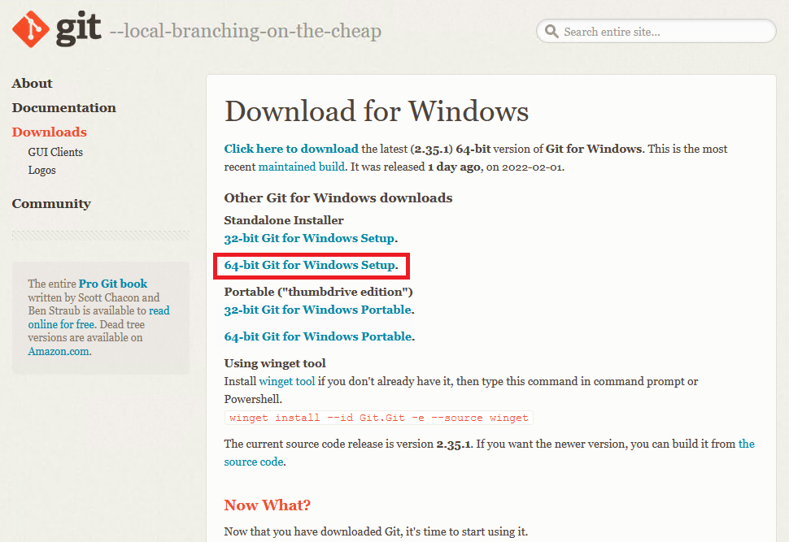
Most of the installation defaults are fine, but watch out for these ones:
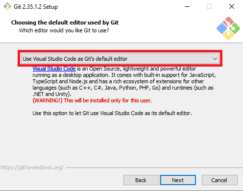
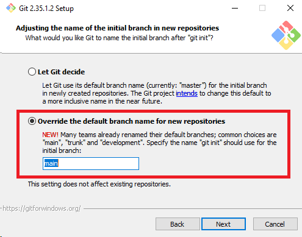
Configure Git
We need to do some initial setup for git.
From the command line, configure git:
git config --global user.name "FIRST_NAME LAST_NAME"
git config --global user.email "MY_NAME@example.com"
Use your own name, and the email you plan to use for registering a GitHub account.
Spelling must be perfect, or it will silently fail, leading to later frustrations!
Create a GitHub Account…
Pretty easy to do, just follow along with the provided instructions. Recommended to use your real name and a professional email.
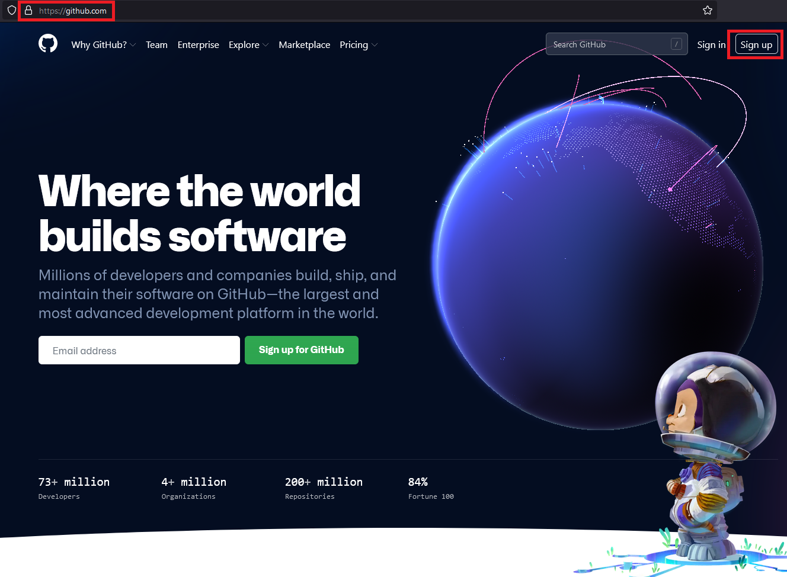
Creating and Linking a Repo through VS Code
Creating a Repo through VS code is easy. First we need to create a folder:
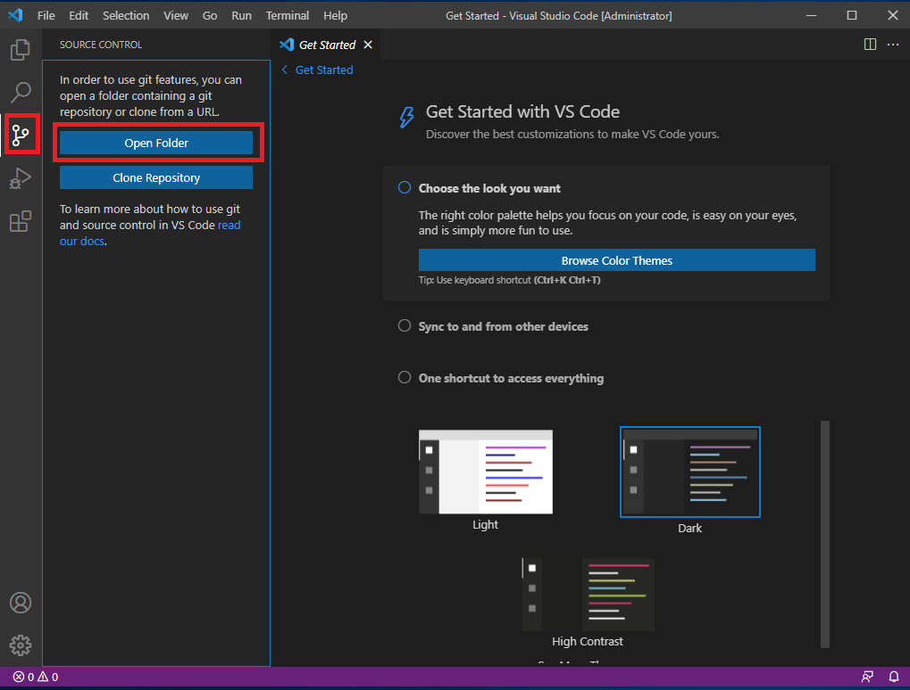
And trust it:
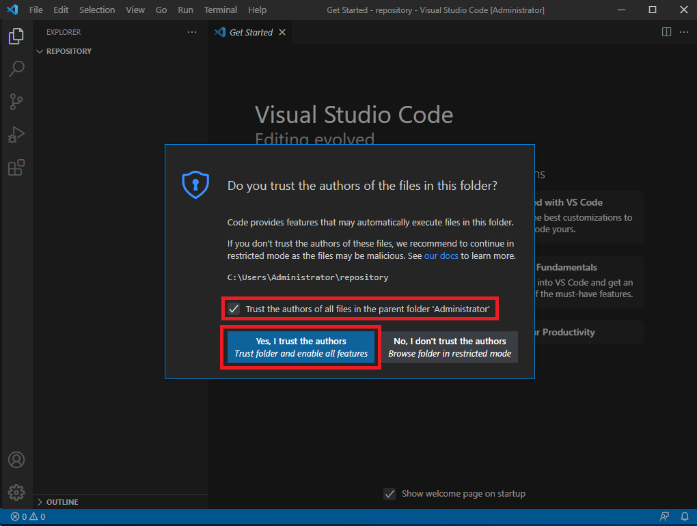
Then add a file:
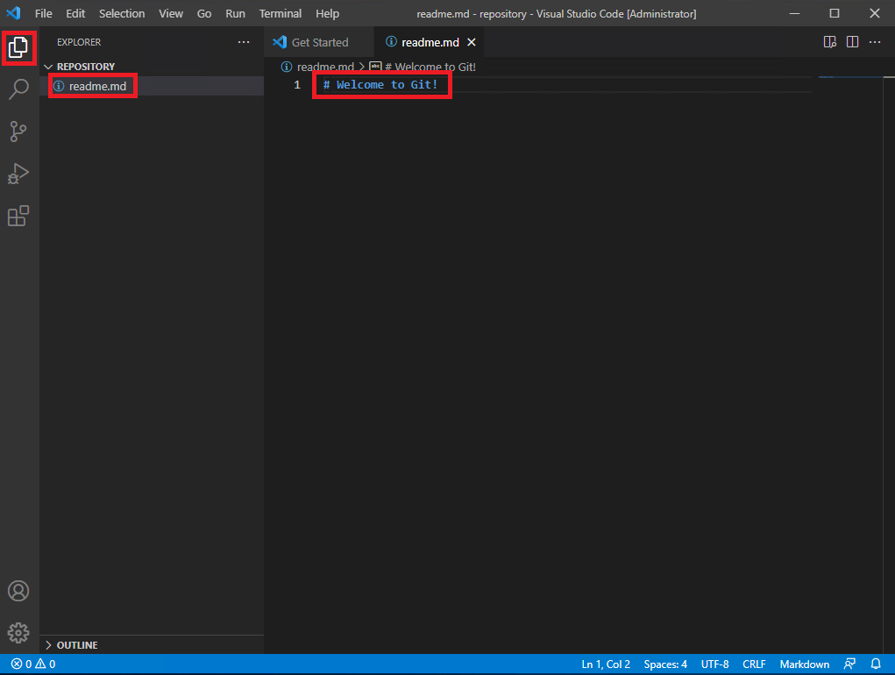
And publish to github:
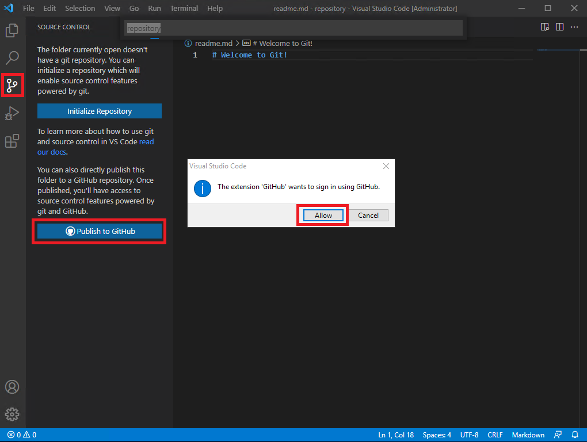
Oh, but we need to authorize VS code to use our GitHub account with O-Auth:
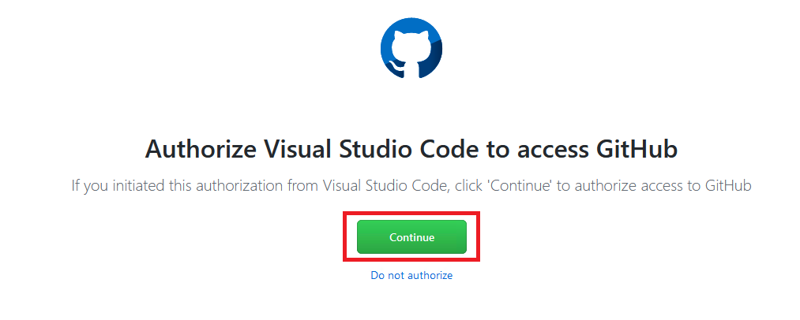
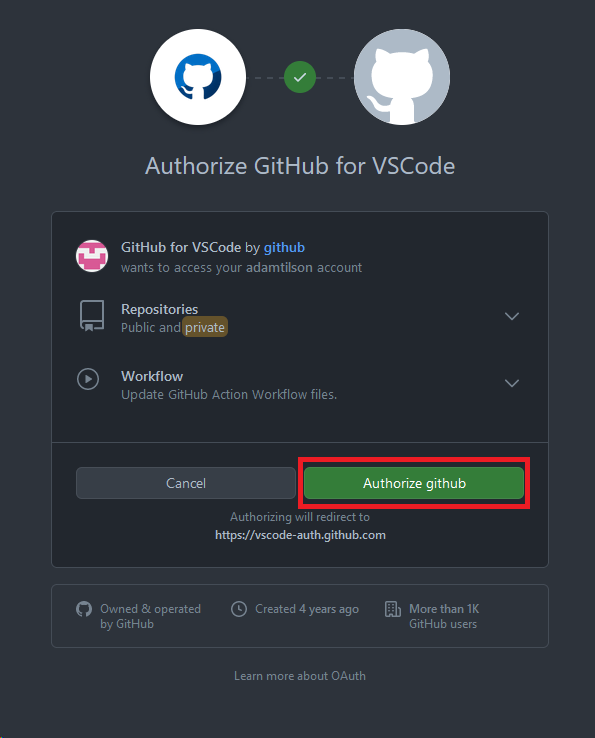
So, now we need to create a remote repo on GitHub:
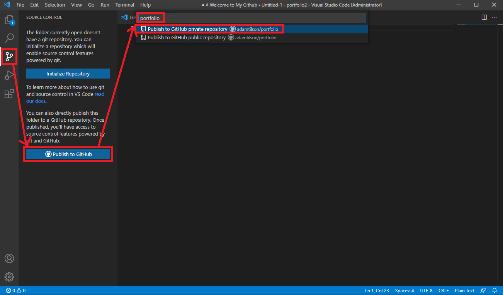
And show which files we are going to send up to the remote:
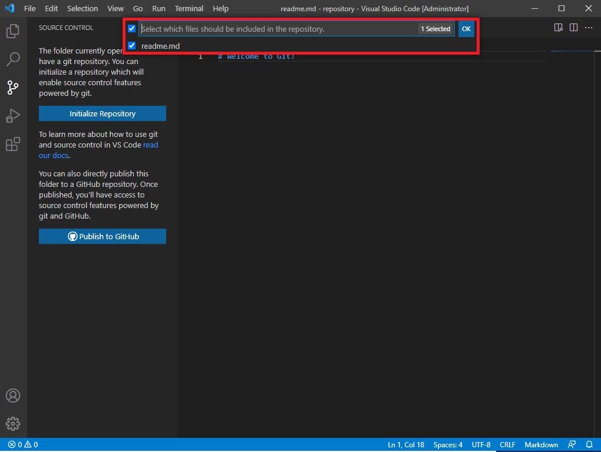
And push it!

Check it out, we have some files on GitHub:
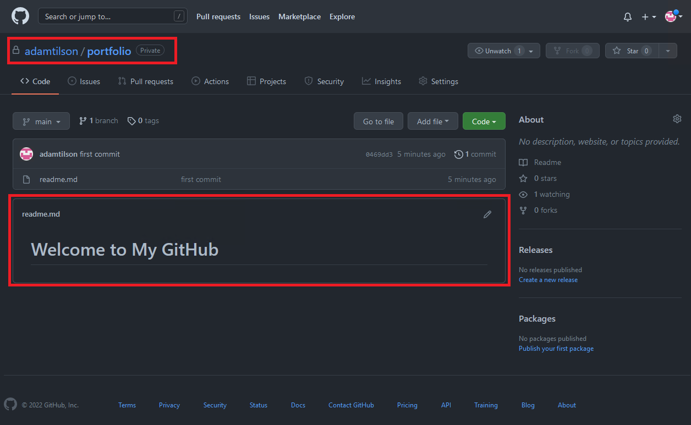
Staging
So VS Code has abstracted a lot of the Git process. Let’s examine it in depth.
Your files can exist in 4 states:
“Working”, “Staging”, “Local Repo” and “Remote Repo”
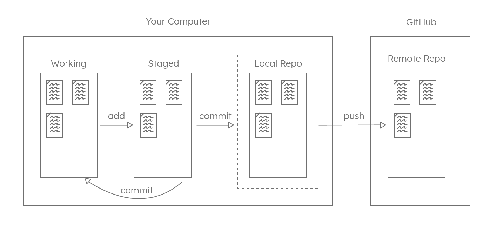
By default, files are in the working (U in VS Code) state.
-
When you run the
addcommand (+), a file is moved from working to staged. This means git knows to include it next time work is checked in with a commit. - When you run a
commitcommand (✓), all of the staged files are backed up into the local repository, and the local files are returned to the working state.- This means, if you want to do another check-in, you will need to
addthem again. - Commits need a brief message to explain the reason for the commit, usually phrased as “verb-nouns”, e.g. “add readme md”
- This means, if you want to do another check-in, you will need to
- Finally, when you wish to synchronize the local repo with the remote repo, you will use a
pushcommand.
Let’s see how this is done in VS Code.
Let’s add another file:
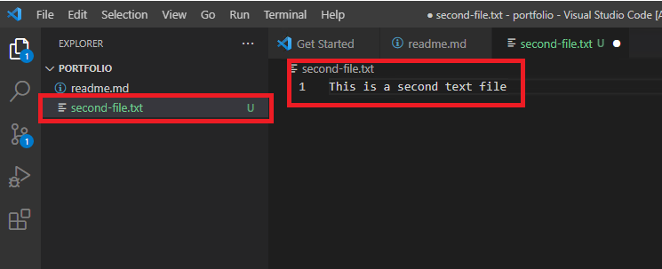
Add it and commit it:
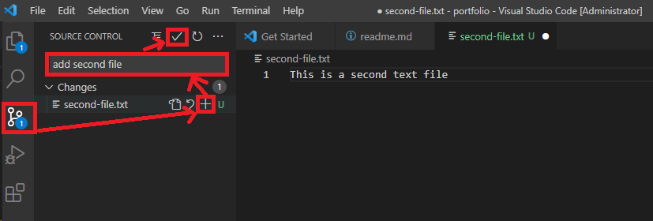
Push it:
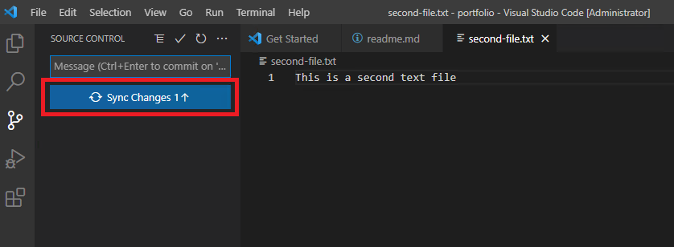
Check it on the website:
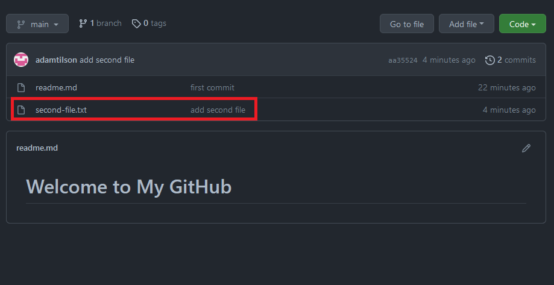
There’s waaaay more to Git and version control than this, but that is for another course. This should be enough to get you uploading files for your portfolio.